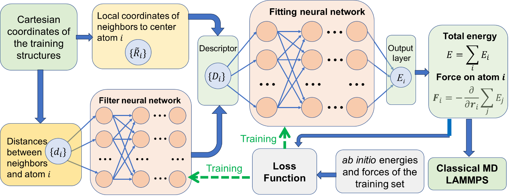

Preprint
Discovery of novel magnetic Y-Mn-B compounds via advanced machine learning guided framework
W. Xia, W. S. Tee, M. Moraru, Y. W. Li, and C. Z. Wang. arXiv:2608.17200 (2026).
Read the preprint MLAMD Center
AI/ML + exascale computing
MLAMD Center
AI/ML + exascale computing
Publications
Publications and manuscript outputs that connect workflow development to magnetic and functional materials applications.
Outputs
Preprint
W. Xia, W. S. Tee, M. Moraru, Y. W. Li, and C. Z. Wang. arXiv:2608.17200 (2026).
Read the preprintPublished paper
W. Xia, M. Moraru, Y. W. Li, T. Liao, J. R. Chelikowsky, and C. Z. Wang. Physical Review Materials 10(2), 024403 (2026).
Read the paperAccepted
F. Zhang, Z. Ye, M. Moraru, Y. W. Li, W. Xia, Y. Yao, R. Richard, and C. Z. Wang. Accepted by Computer Physics Communications; arXiv:2510.01400 (2025).
Read the preprintPreprint
W. Xia, M. Moraru, Y. W. Li, and C. Z. Wang. arXiv:2510.01170 (2025).
Read the preprintSoftware paper
M. Moraru, W. Xia, Z. Ye, F. Zhang, Y. Yao, Y. W. Li, and C. Z. Wang. Journal of Open Source Software 10(115), 8879.
Read the JOSS paper
